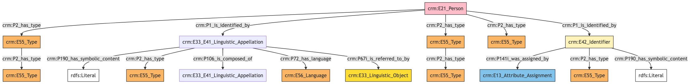
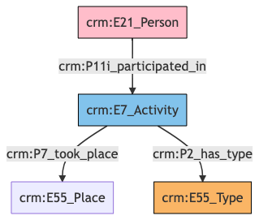
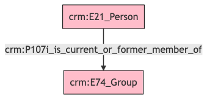
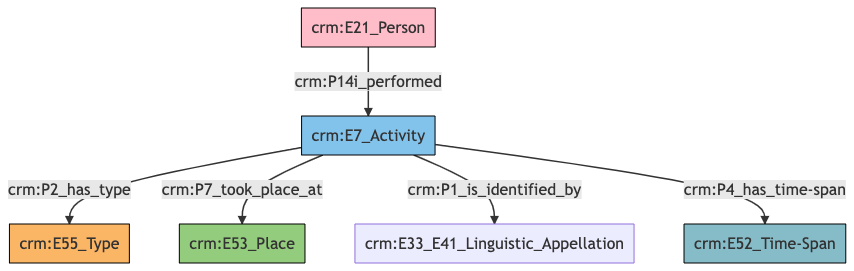
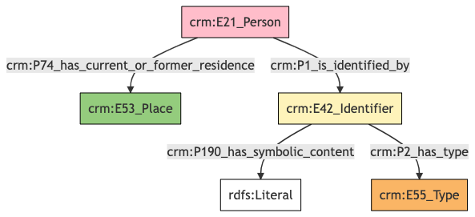

Person
Author: Denitsa Nenova, George Bruseker
Version: 1.0
The Person model is intended to enable the representation and sharing of data relevant to real-world, physical persons. It provides a list of standard fields that are typically present in the description of a Person in cultural heritage data systems. The intention of this reference model is to provide a consolidated, high-level formal structure comprising the most commonly reused descriptors for a Person entity and, further, to provide for these a set of semantic mapping to the CIDOC CRM.
| Name | URI | |
|---|---|---|
| Root Ontology Node | E21 Person | https://cidoc-crm.org/Entity/E21-Person/version-7.1.1 |
| Type Differentiator | N/A | N/A |
Model Sections Description
| Information Category | Information Collections | Description |
|---|---|---|
| Names and Classifications | Names/Alternative Names/Identifiers/Type | The researcher can document various names and classification regarding the Person. |
| Existence | Birth/Death | The researcher can document the events related to the birth and death of the Person. |
| Participation | Role in Activity | The researcher can document the participation of the Person in an activity of a type. |
| Actor Relations | Membership | The researcher can document the membreship of the Person to a Group. |
| Activities | Profession | The researcher can document information about the the professional activities of the Person. |
| Location | Contact Details | The researcher can document relevant addresses and other contact information associated with the Person. |
| Description | Description | The researcher can document various free-text descriptions of the Person. |
| Documentation | Digital Resource | The researcher can document various weblinks and images related to the Person. |
Person Names and Classifications
The attribution of names and types to Persons is a basic human activity. A chief factor in disambiguating which Person is referred to in historical texts is understanding the various names and identifiers that have been given to an individual at different moments. Likewise, additional classifiers of the individual as such, such as gender, help in the disambiguation, in an information system, of the reference to one real-world individual from another.
| Filed ID | Name | Description | Data Type | CRM Path |
|---|---|---|---|---|
| LAF.5 | Name Type | This field is used to record the type of the name attributed to the documented Person. | Concept | ->p1->E33_41[4_1]->p2->E55[5_1] |
| LAF.6 | Name | This field is used to record the string value of the name attributed to the documented Person. | String | ->p1->E33_E41[4_1]->p190->rdf:literal |
| LAF.7 | Name Language | This field is used to record the language of the name attributed to the documented Person. | Concept | ->p1->E33_E41[4_1]->p72->E56[7_1] |
| LAF.44 | Name Source | This field is used to link to a source text in which the name denoting the documented Person is used. | Reference Model [Textual Work] | ->p1->E33_E41[4_1]->p67i->E33[44_1] |
| LAF.500 | Name Part | This field is used to link the documented name of Person to its relevant name part. | Collection [Name] | ->p1->E33_41[4_1]->p106->E33_E41[500_1] |
| LAF.10 | ID | This field is used to record an identifier attributed to the documented Person. | String | ->p1->E42[8_1]->p190->rdf:literal |
| LAF.9 | ID Type | This field is used to record the type of the identifier attributed to the documented Person. | Concept | ->p1->E42[8_1]->p2->E55[9_1] |
| LAF.434 | ID Assigned By | This field is used to indicate the details of the data assignment of this identifier to the documented Person. | Collection [Data Assignment] | ->p1->E42[8_1]->p141i->E13[434_1] |
| LAF.11 | Classification | This field is used to record the formal type of the documented Person. | Concept | ->p2->E55[11_1] |
| LAF.229 | Nationality | This field is used to record the nationality of the documented Person. | Concept | ->p2->E55[229_1] |
| ->p2->E55[229_1]->p2->E55[229_2] | ||||
| LAF.230 | Gender | This field is used to record the gender of the documented Person. | Concept | ->p2->E55[230_1]->p2->E55[230_1]->p2->E55[230_2] |
- Person Names and Classifications Ontology Graph

- Person Names and Classifications RDF
@prefix crm: <http://www.cidoc-crm.org/cidoc-crm/> .
@prefix rdfs: <http://www.w3.org/2000/01/rdf-schema#> .
<https://pma.us/models/person/E21> a crm:E21_Person ;
crm:P1_is_identified_by <https://linked.art/example/conceptual_object/4_1>,
<https://linked.art/example/conceptual_object/8_1> ;
crm:P2_has_type <https://linked.art/example/type/11_1>,
<https://linked.art/example/type/229_1>,
<https://linked.art/example/type/230_1> .
<http://vocab.getty.edu/page/aat/300379842> a crm:E55_Type ;
rdfs:label "Nationality" .
<http://vocab.getty.edu/page/aat/300404670> a crm:E55_Type ;
rdfs:label "preferred terms" .
<http://vocab.getty.edu/page/aat/300411835> a crm:E55_Type ;
rdfs:label "Gender" .
<https://linked.art/example/conceptual_object/4_1> a crm:E33_E41_Linguistic_Appellation ;
crm:P106_is_composed_of <https://linked.art/example/name/500_1> ;
crm:P190_has_symbolic_content "Name_string_value" ;
crm:P2_has_type <http://vocab.getty.edu/page/aat/300404670> ;
crm:P67i_is_referred_to_by <https://linked.art/example/textual_object/44_1> ;
crm:P72_has_language <https://linked.art/example/type/7_1> .
<https://linked.art/example/conceptual_object/8_1> a crm:E42_Identifier ;
crm:P141i_was_assigned_by <https://linked.art/example/event/434_1> ;
crm:P190_has_symbolic_content "Identifier_value_content" ;
crm:P2_has_type <https://linked.art/example/identifier/9_1> .
<https://linked.art/example/event/434_1> a crm:E13_Attribute_Assignment .
<https://linked.art/example/identifier/9_1> a crm:E55_Type .
<https://linked.art/example/name/500_1> a crm:E33_E41_Linguistic_Appellation .
<https://linked.art/example/textual_object/44_1> a crm:E33_Linguistic_Object .
<https://linked.art/example/type/11_1> a crm:E55_Type .
<https://linked.art/example/type/229_1> a crm:E55_Type ;
crm:P2_has_type <http://vocab.getty.edu/page/aat/300379842> .
<https://linked.art/example/type/230_1> a crm:E55_Type ;
crm:P2_has_type <http://vocab.getty.edu/page/aat/300411835> .
<https://linked.art/example/type/7_1> a crm:E56_Language .
- Person Names and Classifications JSON-LD
{
"@context": "https://linked.art/ns/v1/linked-art.json",
"@graph": [
{
"classified_as": [
"https://linked.art/example/type/229_1",
"https://linked.art/example/type/230_1",
"https://linked.art/example/type/11_1"
],
"id": "https://pma.us/models/person/E21",
"identified_by": [
"https://linked.art/example/conceptual_object/8_1",
"https://linked.art/example/conceptual_object/4_1"
],
"type": "Person"
},
{
"_label": "Gender",
"id": "http://vocab.getty.edu/page/aat/300411835",
"type": "Type"
},
{
"id": "https://linked.art/example/textual_object/44_1",
"type": "LinguisticObject"
},
{
"id": "https://linked.art/example/event/434_1",
"type": "AttributeAssignment"
},
{
"id": "https://linked.art/example/type/11_1",
"type": "Type"
},
{
"id": "https://linked.art/example/name/500_1",
"type": "Name"
},
{
"classified_as": [
"http://vocab.getty.edu/page/aat/300404670"
],
"content": "Name_string_value",
"crm:P106_is_composed_of": {
"id": "https://linked.art/example/name/500_1"
},
"id": "https://linked.art/example/conceptual_object/4_1",
"language": [
"https://linked.art/example/type/7_1"
],
"referred_to_by": [
"https://linked.art/example/textual_object/44_1"
],
"type": "Name"
},
{
"classified_as": [
"http://vocab.getty.edu/page/aat/300411835"
],
"id": "https://linked.art/example/type/230_1",
"type": "Type"
},
{
"_label": "preferred terms",
"id": "http://vocab.getty.edu/page/aat/300404670",
"type": "Type"
},
{
"id": "https://linked.art/example/type/7_1",
"type": "Language"
},
{
"id": "https://linked.art/example/identifier/9_1",
"type": "Type"
},
{
"classified_as": [
"http://vocab.getty.edu/page/aat/300379842"
],
"id": "https://linked.art/example/type/229_1",
"type": "Type"
},
{
"_label": "Nationality",
"id": "http://vocab.getty.edu/page/aat/300379842",
"type": "Type"
},
{
"assigned_by": [
"https://linked.art/example/event/434_1"
],
"classified_as": [
"https://linked.art/example/identifier/9_1"
],
"content": "Identifier_value_content",
"id": "https://linked.art/example/conceptual_object/8_1",
"type": "Identifier"
}
]
}
Person Existence
Of essential importance in identifying and tracking individuals is also their biographical information, such as their birth and death. For this reason, we have clustered descriptors relevant to such information into a common ‘existence’ category. These are described in the table below.
| Filed ID | Name | Description | Data Type | CRM Path |
|---|---|---|---|---|
| LAF.183 | Death Place | This field is used to link the documented event of death of a Person to a location at which it occurred. | Reference Model [Place] | ->P100i->E69[183_1]->P7->E53[183_2] |
| LAF.184 | Death Period | This field is used to link the documented event of death of a Person to the period during which it occurred. | Reference Model [Period] | ->P100i->E69[183_1]->P117->E4[184_1] |
| LAF.187 | Death Date | This field is used to link the documented event of death of a Person to an instance of time-span recording the temporal extent of the event. | Collection [Timespan] | ->P100i->E69[183_1]->P4->E52[187_1] |
| LAF.188 | Death Type | This field is used to record the formal type of the documented event of death of a Person. | Concept | ->P100i->E69[183_1]->P2->E55[188_1] |
| LAF.191 | Death Notes | This field is used to link the documented event of death of a Person to a statement that describes it. | Collection [Textual Work] | ->P100i->E69[183_1]->P67i->E33[191_1] |
| LAF.192 | Birth Place | This field is used to link the documented event of birth of a Person to a location at which it occurred. | Reference Model [Place] | ->P98i->E67[192_1]->P7->E53[192_2] |
| LAF.193 | Birth Period | This field is used to link the documented event of birth of a Person to the period during which it occurred. | Reference Model [Period] | ->P98i->E67[192_1]->P117->E4[193_1] |
| LAF.196 | Birth Date | This field is used to link the documented event of birth of a Person to an instance of time-span recording the temporal extent of the event. | Collection [Timespan] | ->P98i->E67[192_1]->P4->E52[196_1] |
| LAF.200 | Birth Notes | This field is used to link the documented event of birth of a Person to a statement that describes it. | Collection [Statement] | ->P98i->E67[192_1]->P67i->E33[200_1] |
| PMAF.28 | Mother | This field is used to record the mother of the documented Person. | Reference Model [Person] | ->P98i->E67[192_1]->P96->E21[A28_1] |
| PMAF.29 | Father | This field is used to record the father of the documented Person. | Reference Model [Person] | ->P98i->E67[192_1]->P97->E21[A29_1] |
- Person Existence Ontology Graph

- Person Existence RDF
@prefix crm: <http://www.cidoc-crm.org/cidoc-crm/> .
<https://pma.us/models/person/E21> a crm:E21_Person ;
crm:P100i_died_in <https://linked.art/example/event/183_1> ;
crm:P98i_was_born <https://linked.art/example/event/192_1> .
<https://linked.art/example/actor/A28_1> a crm:E21_Person .
<https://linked.art/example/actor/A29_1> a crm:E21_Person .
<https://linked.art/example/conceptual_object/191_1> a crm:E33_Linguistic_Object .
<https://linked.art/example/conceptual_object/200_1> a crm:E33_Linguistic_Object .
<https://linked.art/example/event/183_1> a crm:E69_Death ;
crm:P117_occurs_during <https://linked.art/example/event/184_1> ;
crm:P2_has_type <https://linked.art/example/type/188_1> ;
crm:P4_has_time-span <https://linked.art/example/time_span/187_1> ;
crm:P67i_is_referred_to_by <https://linked.art/example/conceptual_object/191_1> ;
crm:P7_took_place_at <https://linked.art/example/place/183_2> .
<https://linked.art/example/event/184_1> a crm:E4_Period .
<https://linked.art/example/event/192_1> a crm:E67_Birth ;
crm:P117_occurs_during <https://linked.art/example/event/193_1> ;
crm:P4_has_time-span <https://linked.art/example/time_span/196_1> ;
crm:P67i_is_referred_to_by <https://linked.art/example/conceptual_object/200_1> ;
crm:P7_took_place_at <https://linked.art/example/place/192_2> ;
crm:P96_by_mother <https://linked.art/example/actor/A28_1> ;
crm:P97_from_father <https://linked.art/example/actor/A29_1> .
<https://linked.art/example/event/193_1> a crm:E4_Period .
<https://linked.art/example/place/183_2> a crm:E53_Place .
<https://linked.art/example/place/192_2> a crm:E53_Place .
<https://linked.art/example/time_span/187_1> a crm:E52_Time-Span .
<https://linked.art/example/time_span/196_1> a crm:E52_Time-Span .
<https://linked.art/example/type/188_1> a crm:E55_Type .
- Person Existence JSON-LD
{
"@context": "https://linked.art/ns/v1/linked-art.json",
"@graph": [
{
"id": "https://linked.art/example/type/188_1",
"type": "Type"
},
{
"born": "https://linked.art/example/event/192_1",
"died": "https://linked.art/example/event/183_1",
"id": "https://pma.us/models/person/E21",
"type": "Person"
},
{
"id": "https://linked.art/example/event/193_1",
"type": "Period"
},
{
"by_mother": "https://linked.art/example/actor/A28_1",
"crm:P117_occurs_during": {
"id": "https://linked.art/example/event/193_1"
},
"from_father": [
"https://linked.art/example/actor/A29_1"
],
"id": "https://linked.art/example/event/192_1",
"referred_to_by": [
"https://linked.art/example/conceptual_object/200_1"
],
"timespan": "https://linked.art/example/time_span/196_1",
"took_place_at": [
"https://linked.art/example/place/192_2"
],
"type": "Birth"
},
{
"id": "https://linked.art/example/actor/A29_1",
"type": "Person"
},
{
"id": "https://linked.art/example/conceptual_object/191_1",
"type": "LinguisticObject"
},
{
"id": "https://linked.art/example/time_span/196_1",
"type": "TimeSpan"
},
{
"id": "https://linked.art/example/place/192_2",
"type": "Place"
},
{
"id": "https://linked.art/example/time_span/187_1",
"type": "TimeSpan"
},
{
"id": "https://linked.art/example/actor/A28_1",
"type": "Person"
},
{
"id": "https://linked.art/example/event/184_1",
"type": "Period"
},
{
"classified_as": [
"https://linked.art/example/type/188_1"
],
"crm:P117_occurs_during": {
"id": "https://linked.art/example/event/184_1"
},
"id": "https://linked.art/example/event/183_1",
"referred_to_by": [
"https://linked.art/example/conceptual_object/191_1"
],
"timespan": "https://linked.art/example/time_span/187_1",
"took_place_at": [
"https://linked.art/example/place/183_2"
],
"type": "Death"
},
{
"id": "https://linked.art/example/place/183_2",
"type": "Place"
},
{
"id": "https://linked.art/example/conceptual_object/200_1",
"type": "LinguisticObject"
}
]
}
Person Participation
Of essential importance in identifying and tracking individuals is also their participation in different activities and their location.
| Filed ID | Name | Description | Data Type | CRM Path |
|---|---|---|---|---|
| PMAF.64 | Role | This field is used to document the type of activity in which the documented Person took part. | Concept | ->p11i->E7[A64_1]->p2->E55[A64_2] |
| PMAF.65 | Activity Location | This field is used to document the location of an activity in which the documented Person took part. | Reference Model [Place] | ->p11i->E7[A64_1]->p7->E53[A65_1] |
- Person Participation Ontology Graph

- Person Participation RDF
@prefix crm: <http://www.cidoc-crm.org/cidoc-crm/> .
<https://pma.us/models/person/E21> a crm:E21_Person ;
crm:P11i_participated_in <http://linked.art/example/event/A64_1> .
<http://linked.art/example/event/A64_1> a crm:E7_Activity ;
crm:P2_has_type <http://linked.art/example/type/A64_2> ;
crm:P7_took_place <http://linked.art/example/place/A65_1> .
<http://linked.art/example/place/A65_1> a crm:E55_Place .
<http://linked.art/example/type/A64_2> a crm:E55_Type .
- Person Participation JSON-LD
{
"@context": "https://linked.art/ns/v1/linked-art.json",
"@graph": [
{
"id": "https://pma.us/models/person/E21",
"participated_in": [
"http://linked.art/example/event/A64_1"
],
"type": "Person"
},
{
"id": "http://linked.art/example/type/A64_2",
"type": "Type"
},
{
"id": "http://linked.art/example/place/A65_1",
"type": "crm:E55_Place"
},
{
"classified_as": [
"http://linked.art/example/type/A64_2"
],
"crm:P7_took_place": {
"id": "http://linked.art/example/place/A65_1"
},
"id": "http://linked.art/example/event/A64_1",
"type": "Activity"
}
]
}
Person Actor Relations
An area of documentation and potential disambiguation around the person relates to social relations, interpersonal or institutional.
| Filed ID | Name | Description | Data Type | CRM Path |
|---|---|---|---|---|
| LAF.167 | Member of | This field is used to link the documented Person to a broader group of which it is a member / forms a part. | Reference Model [Group] | ->P107i->E74[167_1] |
- Person Actor Relations Ontology Graph

- Person Actor Relations RDF
@prefix crm: <http://www.cidoc-crm.org/cidoc-crm/> .
<https://pma.us/models/person/E21> a crm:E21_Person ;
crm:P107i_is_current_or_former_member_of <https://linked.art/example/actor/167_1> .
<https://linked.art/example/actor/167_1> a crm:E74_Group .
- Person Actor Relations JSON-LD
{
"@context": "https://linked.art/ns/v1/linked-art.json",
"@graph": [
{
"crm:P107i_is_current_or_former_member_of": {
"id": "https://linked.art/example/actor/167_1"
},
"id": "https://pma.us/models/person/E21",
"type": "Person"
},
{
"id": "https://linked.art/example/actor/167_1",
"type": "Group"
}
]
}
Person Activities
An important area of documentation and potential disambiguation around the Person relates to their professional activities.
| Filed ID | Name | Description | Data Type | CRM Path |
|---|---|---|---|---|
| LAF.126 | Work Place | This field is used to link the documented Person's professional activity to a location at which it was carried out. | Reference Model [Place] | ->P14i->E7[126_1]->P7->E53[126_2] |
| LAF.131 | Profession | This field is used to link the documented Person's professional activity to a name that has been attributed to it. | Collection [Statement] | ->P14i->E7[126_1]->P1->E33_E41[131_1] |
| LAF.133 | Profession Practices Dates | This field is used to link the documented Person's professional activity to an instance of time-span recording the temporal extent of the activity. | Collection [Timespan] | ->P14i->E7[126_1]->P4->E52[133_1] |
| LAF.134 | Profession Type | This field is used to record the formal type of the documented Person's professional activity. | Concept | ->P14i->E7[126_1]->P2->E55[134_1] |
- Person Works Ontology Graph

- Person Works RDF
@prefix crm: <http://www.cidoc-crm.org/cidoc-crm/> .
<https://pma.us/models/person/E21> a crm:E21_Person ;
crm:P14i_performed <https://linked.art/example/event/126_1> .
<https://linked.art/example/event/126_1> a crm:E7_Activity ;
crm:P1_is_identified_by <https://linked.art/example/name/131_1> ;
crm:P2_has_type <https://linked.art/example/type/134_1> ;
crm:P4_has_time-span <https://linked.art/example/time_span/133_1> ;
crm:P7_took_place_at <https://linked.art/example/place/126_2> .
<https://linked.art/example/name/131_1> a crm:E33_E41_Linguistic_Appellation .
<https://linked.art/example/place/126_2> a crm:E53_Place .
<https://linked.art/example/time_span/133_1> a crm:E52_Time-Span .
<https://linked.art/example/type/134_1> a crm:E55_Type .
- Person Works JSON-LD
{
"@context": "https://linked.art/ns/v1/linked-art.json",
"@graph": [
{
"carried_out": [
"https://linked.art/example/event/126_1"
],
"id": "https://pma.us/models/person/E21",
"type": "Person"
},
{
"classified_as": [
"https://linked.art/example/type/134_1"
],
"id": "https://linked.art/example/event/126_1",
"identified_by": [
"https://linked.art/example/name/131_1"
],
"timespan": "https://linked.art/example/time_span/133_1",
"took_place_at": [
"https://linked.art/example/place/126_2"
],
"type": "Activity"
},
{
"id": "https://linked.art/example/time_span/133_1",
"type": "TimeSpan"
},
{
"id": "https://linked.art/example/type/134_1",
"type": "Type"
},
{
"id": "https://linked.art/example/name/131_1",
"type": "Name"
},
{
"id": "https://linked.art/example/place/126_2",
"type": "Place"
}
]
}
Person Contact Point
An important area of documentation and potential disambiguation around the Person relates to the contact information of real individuals. This normally involves the recording of the current address and another prefered form of communication with the documented Person.
| Filed ID | Name | Description | Data Type | CRM Path |
|---|---|---|---|---|
| LAF.172 | Current Address | This field is used to link the documented Person to a place at which they have been resident. | Reference Model [Place] | ->P74->E53[172_1] |
| LAF.169 | Contact Point Type | This field is used to record the type of the contact Point attributed to the documented Person. | Concept | ->P1->E42[168_1]->P2->E55[169_1] |
| LAF.170 | Contact Details | This field is used to record a contact Point attributed to the documented Person. | String | ->P1->E42[168_1]->P190->rdf:literal |
- Person Contact Point Ontology Graph

- Person Contact Point RDF
@prefix crm: <http://www.cidoc-crm.org/cidoc-crm/> .
<https://pma.us/models/person/E21> a crm:E21_Person ;
crm:P1_is_identified_by <https://linked.art/example/conceptual_object/168_1> ;
crm:P74_has_current_or_former_residence <https://linked.art/example/place/172_1> .
<https://linked.art/example/conceptual_object/168_1> a crm:E42_Identifier ;
crm:P190_has_symbolic_content "Identifier_value_content" ;
crm:P2_has_type <https://linked.art/example/type/169_1> .
<https://linked.art/example/place/172_1> a crm:E53_Place .
<https://linked.art/example/type/169_1> a crm:E55_Type .
- Person Contact Point JSON-LD
{
"@context": "https://linked.art/ns/v1/linked-art.json",
"@graph": [
{
"id": "https://pma.us/models/person/E21",
"identified_by": [
"https://linked.art/example/conceptual_object/168_1"
],
"residence": [
"https://linked.art/example/place/172_1"
],
"type": "Person"
},
{
"id": "https://linked.art/example/type/169_1",
"type": "Type"
},
{
"id": "https://linked.art/example/place/172_1",
"type": "Place"
},
{
"classified_as": [
"https://linked.art/example/type/169_1"
],
"content": "Identifier_value_content",
"id": "https://linked.art/example/conceptual_object/168_1",
"type": "Identifier"
}
]
}
Person Description
This category brings together the diverse field which describes the documented Person. It is meant to cover information concerning the type, language content of the description as well as temporal information about the description itself.
| Filed ID | Name | Description | Data Type | CRM Path |
|---|---|---|---|---|
| LAF.14 | Statement Type | This field is used to record the formal type of the statement made about the documented Person. | Concept | ->p67i->E33[13_1]->p2->E55[14_1] |
| LAF.15 | Statement | This field is used to record the actual textual content of the statement describing the documented Person. | String | ->p67i->E33[13_1]->p190->rdf:literal |
| LAF.16 | Statement Language | This field is used to record the language of the statement describing the documented Person. | Concept | ->p67i->E33[13_1]->p72->E56[16_1] |
| LAF.50 | Statement Name | This field is used to link to a name attributed to the statement made about the documented Person. | Collection [Name] | ->p67i->E33[13_1]->p1->E33_E41[50_1] |
- Person Description Ontology Graph

- Person Description RDF
@prefix crm: <http://www.cidoc-crm.org/cidoc-crm/> .
<https://pma.us/models/person/E21> a crm:E21_Person ;
crm:P67i_is_referred_to_by <https://linked.art/example/conceptual_object/13_1> .
<http://vocab.getty.edu/aat/300418049> a crm:E55_Type .
<https://linked.art/example/conceptual_object/13_1> a crm:E33_Linguistic_Object ;
crm:P190_has_symbolic_content "Statement_string_content" ;
crm:P1_is_identified_by <https://linked.art/example/name/50_1> ;
crm:P2_has_type <https://linked.art/example/type/14_1> ;
crm:P72_has_language <https://linked.art/example/type/16_1> .
<https://linked.art/example/name/50_1> a crm:E33_E41_Linguistic_Appellation .
<https://linked.art/example/type/14_1> a crm:E55_Type ;
crm:P2_has_type <http://vocab.getty.edu/aat/300418049> .
<https://linked.art/example/type/16_1> a crm:E56_Language .
- Person Description JSON-LD
{
"@context": "https://linked.art/ns/v1/linked-art.json",
"@graph": [
{
"id": "https://pma.us/models/person/E21",
"referred_to_by": [
"https://linked.art/example/conceptual_object/13_1"
],
"type": "Person"
},
{
"id": "http://vocab.getty.edu/aat/300418049",
"type": "Type"
},
{
"id": "https://linked.art/example/type/16_1",
"type": "Language"
},
{
"classified_as": [
"http://vocab.getty.edu/aat/300418049"
],
"id": "https://linked.art/example/type/14_1",
"type": "Type"
},
{
"classified_as": [
"https://linked.art/example/type/14_1"
],
"content": "Statement_string_content",
"id": "https://linked.art/example/conceptual_object/13_1",
"identified_by": [
"https://linked.art/example/name/50_1"
],
"language": [
"https://linked.art/example/type/16_1"
],
"type": "LinguisticObject"
},
{
"id": "https://linked.art/example/name/50_1",
"type": "Name"
}
]
}
Person Documentation
This information category unites referential information about the documented Person, providing contextual data about them.
| Filed ID | Name | Description | Data Type | CRM Path |
|---|---|---|---|---|
| LAF.37 | Same As | This field is used to document a URI which is meant to indicate an equivalence between the documented Person and a resolvable, structured reference resource that stands as a document for this self same entity. | Class | ->skos:ExactMatch->E1[37_1] |
| PMAF.84 | Digital Object Type | This field is used to link to a type record which indicates the kind of reference supported by the digital resource that serves as a reference for the documented Person. | Concept | ->P02i->PC67[A83_1]->P67.1->E55[A84_1] |
| PMAF.83 | Digital Object | This field is used to link to an instance of digital resource which serves as a digital reference document for the documented Person. | Reference Model [Digital Object] | ->P02i->PC67[A83_1]->P01->D1[A83_2] |
- Person Documentaion Ontology Graph

- Person Documentaion RDF
@prefix crm: <http://www.cidoc-crm.org/cidoc-crm/> .
@prefix skos: <http://skos> .
<https://pma.us/models/person/E21> a crm:E21_Person ;
skos:ExactMatch <https://linked.art/example/entity/37_1> ;
crm:P02i_is_range_of <https://linked.art/example/reified_property/A83_1> .
<https://linked.art/example/conceptual_object/A83_2> a crm:D1_Digital_Object .
<https://linked.art/example/conceptual_object/A84_1> a crm:E55_Type .
<https://linked.art/example/entity/37_1> a crm:E1_CRM_Entity .
<https://linked.art/example/reified_property/A83_1> a crm:PC67_refers_to ;
crm:P01_has_domain <https://linked.art/example/conceptual_object/A83_2> ;
crm:P67.1_has_type <https://linked.art/example/conceptual_object/A84_1> .
- Person Documentaion JSON-LD
{
"@context": "https://linked.art/ns/v1/linked-art.json",
"@graph": [
{
"crm:P02i_is_range_of": {
"id": "https://linked.art/example/reified_property/A83_1"
},
"http://skosExactMatch": {
"id": "https://linked.art/example/entity/37_1"
},
"id": "https://pma.us/models/person/E21",
"type": "Person"
},
{
"id": "https://linked.art/example/conceptual_object/A83_2",
"type": "crm:D1_Digital_Object"
},
{
"crm:P01_has_domain": {
"id": "https://linked.art/example/conceptual_object/A83_2"
},
"crm:P67.1_has_type": {
"id": "https://linked.art/example/conceptual_object/A84_1"
},
"id": "https://linked.art/example/reified_property/A83_1",
"type": "crm:PC67_refers_to"
},
{
"id": "https://linked.art/example/conceptual_object/A84_1",
"type": "Type"
},
{
"id": "https://linked.art/example/entity/37_1",
"type": "CRMEntity"
}
]
}